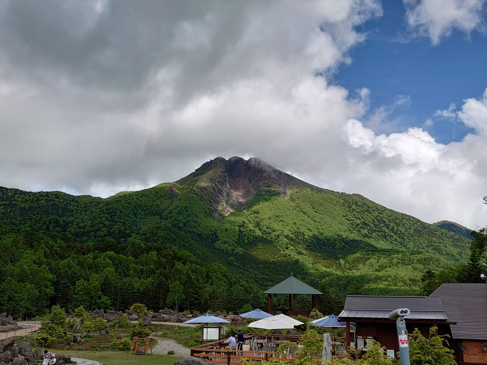
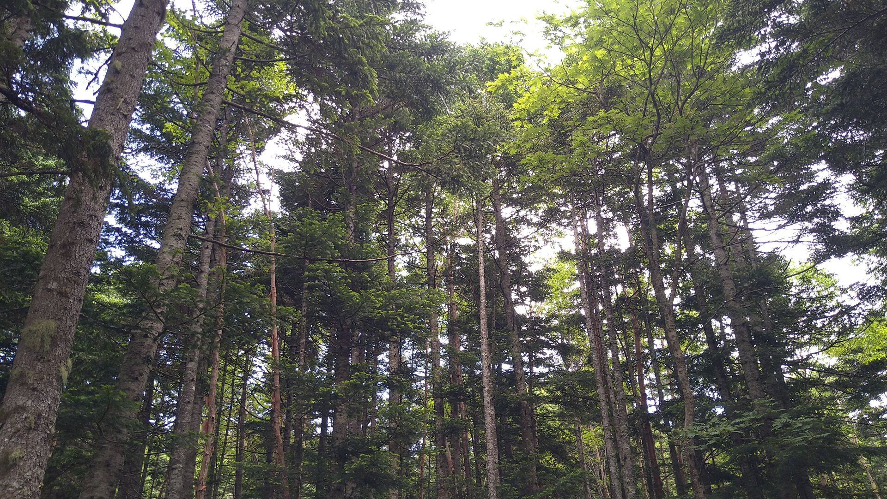
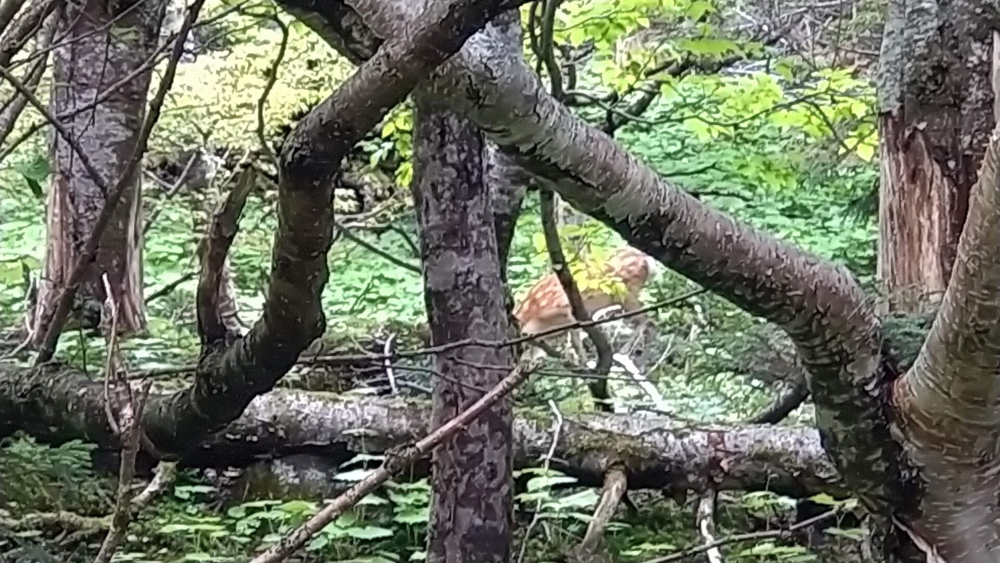

地理愛好会では登山好きな会員が有志で集まって「山岳班」を結成し、首都圏の各地の山に登りに行っている。現在の班員数は8名ほど、登山の頻度は月1回である。
今回は7/3に行われた日光白根山の登山について紹介する。
まず簡単に日光白根山の概要を説明する。日光白根山は標高2578mの活火山で、群馬県片品村と栃木県日光市の境目に位置している。また関東地方の最高峰でもある。
日光白根山の登山口までは丸沼高原スキー場のロープウェイを使って登る。15分ほどロープウェイに揺られて登山口に到着すると、横に足湯が見えた。これは天空の足湯と呼ばれる、標高2000mからの景色を楽しみながら足湯に入れるスポットである。帰りに時間があれば寄ってみたい。
登山口からしばらくは比較的整備された登山道が伸びている。1時間ほど森の中を歩き続けると、いきなり森林限界を抜け視界が開ける。ここからは絶景を背に岩場を30分ほど登る。ゴロゴロした小石に足を取られとても歩きづらいが、それでも頑張って足を進めると日光白根山の山頂に到着する。
山頂に到着すると、そこでは「白根山」と書かれた標識を新しいものに取り替える作業が行われていた。記念に新旧両方の標識と写真撮影をした。あいにくの天気により周辺の景色は望めなかったが、エメラルドグリーンの五色沼は見下ろすことができた。これからその五色沼に向かう。
岩場を慎重に下っていくと、避難小屋に到着。中で宿泊することもできる立派な小屋だった。そこから五色沼方面に歩いていくと、なんと野生の鹿に遭遇。特に危害を加えられることもなく横を通り過ぎたが、いきなりの出来事に絶句してしまった。その後五色沼に到着し、皆で水切りをした。
弥陀ヶ池を通過し、白根山を横目に鞍部を越え、沢を下った後は特にアップダウンもなく登山口に戻ってきた。予定よりも大幅に速いペースで戻って来れたため、あの足湯に浸かってまったりした。ロープウェイで麓まで下りた後は併設の日帰り温泉で疲れをとり、帰途についた。
地理愛好会山岳班では他にも登山を行ってきたので、できれば今後それらの紹介もしていきたい。